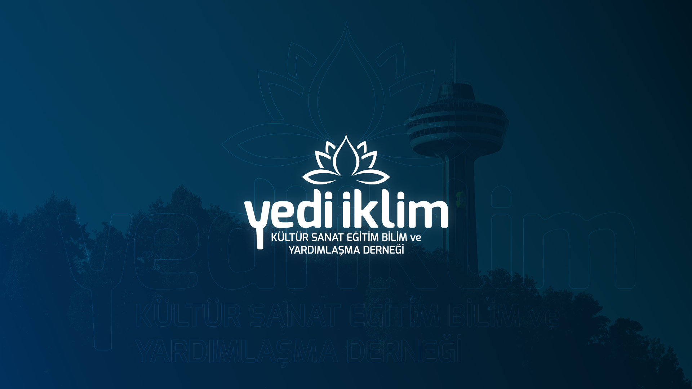
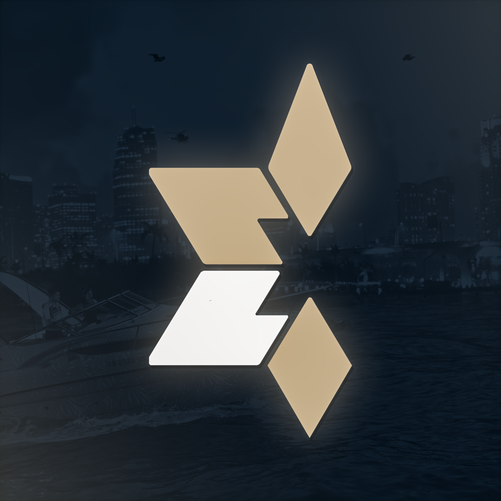

A playable collection of animated visual studies. Press play and stay a while.
REEL 001 / HIGHLIGHTS
A little motion.
Eight original motion studies, including EXOTIC Roleplay and Counter Assault Team. Explore up to five seconds of each animation.
READY / PRESS PLAY
04 / The archive
More to uncover.

Yediiklim↗

EXOTIC Roleplay / Logo↗EXOTIC Roleplay↗Poster study / 01↗Poster study / 02↗Poster study / 03↗Poster study / 04↗Poster study / 05↗Identity study / 06↗Identity study / 07↗Poster study / 08↗Poster study / 09↗Identity study / 14↗Poster study / 15↗Visual experiment / 16↗Poster study / 17↗Poster study / 18↗Identity study / 19↗Logo study / 20↗Logo study / 21↗Poster study / 22↗Poster study / 23↗Poster study / 24↗Logo study / 27↗Logo study / 28↗Logo study / 29↗
05 / WHAT I DO
Ideas into impact.
From a single statement poster to a complete visual language. These are the disciplines behind the selected work.
01 / CAMPAIGN VISUALS↗
Poster & Key Art
Cinematic compositions, expressive typography and campaign-ready creative artwork that makes the idea impossible to overlook.
I'm MASSYNE. I turn ideas into expressive visuals that don't disappear into the scroll.
My work brings together cinematic poster composition, graphic design, visual identity and motion. I'm drawn to strong concepts, considered typography and bold artistic direction.